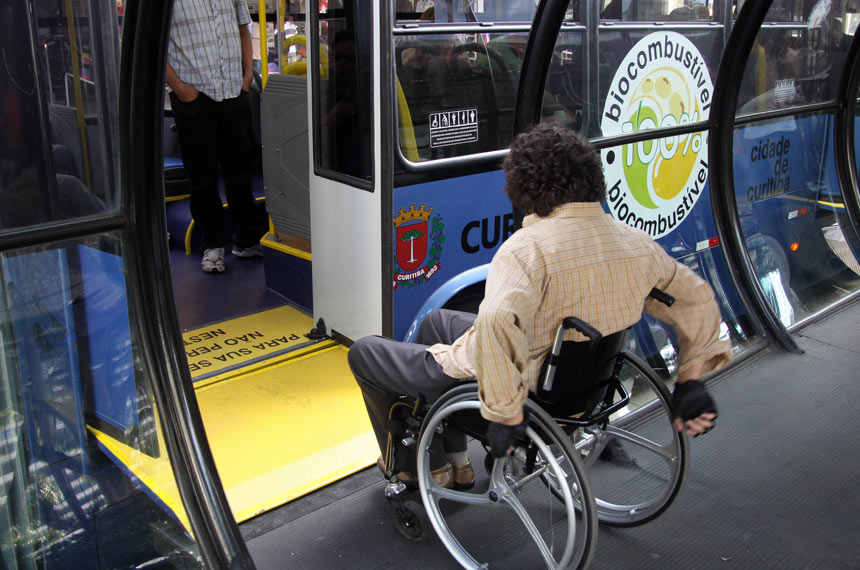

Espaços Públicos Acessiveis
O que são Espaços Públicos Acessíveis?
Espaços públicos acessíveis são aqueles projetados ou adaptados para garantir que todas as pessoas, independentemente de suas habilidades ou deficiências, possam utilizá-los de maneira segura e confortável. Isso inclui ruas, praças, edifícios públicos, transportes, entre outros. A acessibilidade nos espaços públicos envolve a eliminação de barreiras físicas, como escadas, e a implementação de soluções como rampas, sinalização tátil, pisos podotátil, elevadores e banheiros adaptados.
Benefícios da Acessibilidade nos Espaços Públicos
A acessibilidade em espaços públicos promove a inclusão social, permitindo que pessoas com deficiências participem plenamente da vida urbana. Além disso, contribui para a igualdade de oportunidades, garantindo que todos tenham acesso a serviços e atividades, sem discriminação. Espaços acessíveis também são vantajosos para idosos, gestantes e pessoas com mobilidade reduzida. A criação de um ambiente acessível traz mais liberdade de locomoção e favorece a convivência social, criando cidades mais justas e igualitárias.
Exemplos de Acessibilidade em Espaços Públicos
Rampas de Acesso
Substituem escadas para permitir a circulação de cadeirantes e pessoas com dificuldades de mobilidade.
Sinalização Tátil e Sonora
Ajuda pessoas com deficiência visual a se orientarem em ambientes públicos, como estações de transporte e cruzamentos.
Banheiros Adaptados
Instalações sanitárias projetadas para uso por pessoas com mobilidade reduzida ou cadeirantes, com barras de apoio e espaço amplo.
Transporte Acessível
Ônibus e trens equipados com elevadores e espaços reservados para cadeirantes.
Calçadas e Passagens Seguras
Espaços públicos com piso adequado e obstáculos minimizados, permitindo a circulação segura de todos.
Desafios na Acessibilidade de Espaços Públicos
Infraestrutura Inadequada
Em muitas cidades, a falta de rampas, pisos táteis e outras adaptações em locais públicos dificulta a mobilidade de pessoas com deficiências.
Resistência à Implementação de Mudanças
A resistência à implementação de mudanças em acessibilidade nos espaços públicos é um desafio significativo, muitas vezes causado pela falta de conscientização sobre sua importância e pelo equívoco de que adaptações são financeiramente inviáveis. Infraestruturas antigas e inadequadas, aliadas ao desconhecimento das normas, também dificultam o progresso. Além disso, adaptações em espaços históricos ou sistemas urbanos já consolidados encontram barreiras técnicas e culturais, reforçando a necessidade de maior educação e sensibilização sobre acessibilidade como um direito essencial para todos.
Desigualdade Regional
A adaptação de espaços existentes muitas vezes esbarra na falta de conscientização e vontade política.
Exclusão Social
A exclusão social é um dos principais desafios enfrentados pelas pessoas com deficiência, mesmo em ambientes que oferecem infraestrutura acessível. Atitudes preconceituosas, estereótipos e a falta de conscientização contribuem para a marginalização desses indivíduos em diversas esferas da vida, como educação, mercado de trabalho e lazer. Muitas vezes, a sociedade ainda enxerga a deficiência como uma limitação absoluta, ignorando as capacidades e contribuições das pessoas com deficiência.